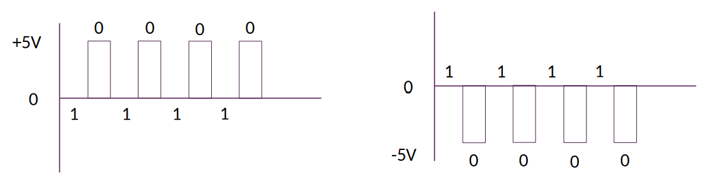

What is an Operating System
- Software that controls hardware to perform various operations.
- Can be a collection of software.
- Can be simple or complex.
Modern OS's contain several complex functions:
- Manage processes.
- Manage memory.
- Interact with hardware.
- Manage multiple concurrently running software.
OS "Modes"
OS software can run in different modes:
- User mode - Apps and the UI run in this mode. Applications must request the OS to perform hardware actions on their behalf.
- Kernel mode - The OS runs in this mode. Also called "Supervisor Mode". Code that runs in kernel mode has direct access to hardware allowing it to perform any operations on the hardware.
Some Functions of the OS
- Read/Write Disk/Memory.
- Pure computations.
- Network communication.
- Media playback.
- I/O peripheral communication.
- General OS security.
The OS Manages Resources
- Hardware.
- Software.
- The file system.
- In memory data.
Modern OS's are capable of managing multitasking and multiprocessing resources.
Common OS Hardware
CPU
The brain of the computer
Fetches instructions and data from memory to execute and operate on them. CPU family specific instructions exist.
Memory
General storage for the computer. Ranges from fast to quick:
- Hardware registers.
- CPU local cache.
- Main Memory (RAM).
- SSD's.
- HDD's.
- Optical disks.
- Magnetic tapes.
I/O Devices
- Monitors.
- Keyboards+
- Mice.
- USB flash drives.
- etc.
The Layers of an OS
- [App] User and other system programs.
- [OS] The UI.
- [OS] System calls - How apps interact with the hardware.
- [OS] OS services - Ongoing OS processes, such as, I/O operations.
- Hardware.
OS Architectures
OS's are, generally, very large programs. Here are a few ways they are structured:
The Simple Structure
- Not divided into modules
- Interfaces and levels of functionality are not well separated.
The Layered Structure
- Divided into a number of layers. Each is built ontop of the last.
- Hardware is layer 0.
- The user interface is the highest layer.
- Layers are defined such that each only uses the functions services of the next lower layer.
Microkernels
- Moves as many services from the kernel into user space.
- Communication between user modules typically uses message passing.
- Easy to extend.
- Easy to port.
- Often more reliable.
- Often more secure.
- There is performance overhead when the various user space modules communicate with their kernel space dependencies.
Modules
Many OS's implement loadable kernel modules.
- Typically uses an Object-Oriented approach.
- Core components are separate.
- Modules communicate over known interfaces.
- Loaded as needed.
- Similar to layers, but more flexible.
A Hybrid Approach
Most modern OS's use a hybrid approach to address various concerns, such as, security, preformance, usability, etc.
Linux Kernel Modules
Each kernel module usually has an initializing function specified with the
module_init() function (macro?). Similarly there is a deinitializing function
specified with the module_exit() function.
Here is a simple kernel module:
#include <linux/init.h>
#include <linux/module.h>
#include <linux/kernel.h>
MODULE_LICENSE("GPL"); // Needed.
static int __init init_kernel_mod(void) {
printk(KERN_ALERT "Initializing kernel mod!\n");
return 0;
}
static void __exit exit_kernel_mod(void) {
printk(KERN_ALERT "Releasing kernel mod resources!\n");
}
module_init(init_kernel_mod);
module_exit(exit_kernel_mod);
And the associated Makefile:
CONFIG_MODULE_SIG=n
obj-m += my_kernel_mod.o
default:
make -C /lib/modules/$(shell uname -r)/build M=$(PWD) modules
clean:
make -C /lib/modules/$(shell uname -r)/build M=$(PWD) clean
Review the Linux kernel module development documentation for details.
Relevant CLI Commands
lsmod- List currently loaded mods.modinfo <mod-name>- Prints info about a specific kernel module.rmmod <mod-name>- Removes a currently loaded module.insmod <mod-name>- Loads a new module (no dependencies on unloaded modules allowed).modprobe <mod-name>- Loads a new module and its dependencies.
Processes
- A program in execution.
- Contains program code. (Stored in the "text" section within a binary.)
- Data section containing global variables. (This is a feature of the binary format, no?)
- Has its own program counter and set of registers.
- Has its own stack.
- Has associated heap memory.
A program is a passive entity stored on disk. When it is loaded into memory and executed, it becomes an active entity called a Process. A program on disk can become multiple processes in memory.
| Process |
|---|
| Stack |
| ..... |
| Heap |
| Data |
| Text |
The Stack grows downwards and the Heap grows Upwards.
Process States
- new - The process is being created.
- running - Instructions are being executed.
- waiting - Execution is paused waiting for some event to occur.
- ready - The process is specifically waiting to be assigned CPU time.
- terminated - The process has finished execution.
--- title: Process States --- stateDiagram-v2 direction LR [*] --> New New --> Ready: admitted Ready --> Running: scheduler dispatch Running --> Ready: interrupt Running --> Waiting: I/O or event wait Waiting --> Ready: I/O or event completion Running --> Terminated: exit Terminated --> [*]
Process Scheduling
- It is considered bad to have process wait for a long time before they get assigned some CPU time.
- Effective process management translates to a "performant" computer.
- We want to maximize CPU usage, quickly swapping in processes as others finish or their allocated time slice expires.
Process Scheduler
- Selects which process executes next on the CPU.
- Maintains a queue of processes.
- Various queues:
- Job Queue - All processes.
- Ready Queue - All processes in Main Memory in the ready state.
- Device Queues - Processes waiting for an I/O device.
With a single CPU core, process must wait for their turn as only one process can run at a time. There are various Scheduling Argorithms to determine when and which process runs.
Two Different Schedulers
The Short-Term Scheduler (a.k.a. CPU Scheduler)
Selects which process should next be allocated some CPU time. This is sometimes the only scheduler in the system. Invoked frequently so it should be fast.
The Long-Term Scheduler (a.k.a. Job Scheduler)
Selects which processes should be brought into the ready queue. Invoked relatively infrequently, need not be fast.
Process Creation
Processes are identified by a process identifier (pid). The parent and child
can execute concurrently or the parent can wait for the child to terminate
before continuing to execute.
Parent and child processes have options when it comes to sharing resources:
- Parent and children can share all resources.
- Children share only a subset of resources.
- Parent and children share no resources.
In terms of the address space:
- The child can recieve a duplicate of the parent's.
- The child can have a fresh program loaded into it. (
exec())
--- title: Process Creation --- stateDiagram-v2 direction LR [*] --> fork() fork() --> exec(): child exec() --> exit() exit() --> wait fork() --> wait: parent wait --> [*]: resumes
Process Termination
- Process resources are deallocated by the OS.
- A parent may terminate a child process by using the
abort()syscall. - Some OS's may not allow children processes to exist if their parent terminates.
- A zombie process is a process who's parent is not waiting for its termination.
- An orphan process is a process who's parent has terminated.
Inter-Process Communication - IPC
Process may be independent or cooperative. If they are cooperative they need some form of communication. This is what IPC is about. We look at two types of IPC:
Shared Memory
- An area of memory shared among processes.
- Communication is under control of the user processes.
- Requires manual synchronization of communication.
| Shared Memory |
|---|
| Process A |
| shared memory |
| Process B |
| ..... |
| ..... |
Message Passing
A system for processes to communicate and synchronize their actions. There are two main operations in message passing: send and recieve. Message sizes can be fixed or variable. If two processes wish to communicate, they must establish a communication link between them. There are physical and logical concerns for communication link implementations, here are some:
- Physical - specifically, the medium over which message passing occurs.
- Shared Memory
- A Hardware Bus
- The Network
- Logical - We look at these in more detail.
- Direct or indirect.
- Synchronous or asynchronous.
- automatic or explicit buffering.
| Message Passing |
|---|
| Process A |
| Process B |
| ..... |
| ..... |
| Message Queuem1, m2, m3, ... |
Direct Communication
- Processes must name each other directly when sending and receiving.
- "Links" are established automatically.
- Links are between exactly one pair of processes and there is only one link between a pair.
- May be unidirectional but are usually bi-directional.
Indirect Communication
- Messages are sent to and received from mailboxes (or ports.)
- Each port has a unique id.
- Processes must share this port.
- A port or mailbox may be associated with multiple processes.
- unidirectional or bi-directional.
Synchronous or Asynchronous
- Message passing may be blocking or non-blocking.
Automatic or Explicit Buffering
Each link has a queue of messages with differing capacities and behaviours:
- Zero capacity - No buffering, the sender must wait for the receiver to receive.
- Bounded Capacity - Finite buffering, the sender must wait if the queue is full.
- Unbounded Capacity - Infinite buffering, the sender never waits.
Relevant Functions
fork()exec()wait()abort()
Threads
A thread is the basic unit of CPU utilization. Thread creation is lightweight compared to process creation. Threads have their Parents’ PCB, its own Thread Control Block, register set, Stack and common Address space
Threads contain:
- ID
- Program Counter
- Register Set
- Stack
Multicore Programming
Parallelism, concurrency. Tasks for developers include:
- Identifying parallelizable/concurrent tasks.
- Balancing parallelism/concurrency.
- Data splitting.
- Data dependencies.
- Testing, debugging.
Threads
User level thread libraries and kernel level threads exist.
We use pthread in this course.
pthreads can be implemented at the user level or kernel level. pthreads is primarily a standard. OS's may implement this standard.
#include <pthread.h>pthread_create()pthread_join()pthread_self()
Producer, Consumer Pattern
self explanatory.
Problems
Producer may produce more than the buffer can hold. (possible buffer overflow). Consumer may attempt to retrieve data after the buffer is emptied. This is known as the "Bounded Buffer Problem".
The solution: ensure both the consumer + producer know the capacity and current size of the buffer. The producer will wait to produce if needed, the consumer will wait to retrieve if the buffer is empty.
Race Conditions
Non-deterministic order of execution of concurrent/parallel code with shared mutable state.
Or
Race Conditions ocurr when two or more threads/processes can access shared data and attempt to access and change that data at the same time. The currently active thread/process can change at any time in between executions of individual instructions potentially causing the threads/processes to access the shared data in an arbitrary order. The typical solution is to place a lock around the shared data.
Critical Sections
Sections of code where shared mutable data is either read or written to.
Can be broken down into the following subsections:
- entry - The thread/process checks if it is okay to enter its critical section.
- critical - The dangerous area.
- exit
- remainder
The entry and critical sections are the most important.
Supporting Critical Sections
Mutual Exclusions
Only one process should execute code in their critical section at a time.
Mutexes
Mutexes facilitate this: first acquire() a lock, later release() the lock.
These two functions need to be atomic and may require hardware support. Trying
to acquire an already acquired lock will cause "busy" waiting. this kind of
behaviour is also called a spinlock.
Progress Guaranteed
If no process is in its critical section, and a process wants to enter its critical section, selection of the next process to enter its critical section cannot be postponed indefinitely.
Bounded Waiting
There is a bound on the number of process's that can cut in line when multiple are waiting to enter their critical sections.
Semaphores
Binary Semaphore - Same as Mutex. Counting Semaphore - internal counter can range over an unrestricted domain. Use atomic 'wait' and 'signal' functions.
CPU Scheduling
The CPU-I/O Burst Cycle
During a CPU burst, the CPU performs computations that don't rely on I/O. Each CPU burst can be of arbitrary length, but is usually followed by an I/O burst. I/O bursts are sections of time where the CPU waits for I/O (Though, the CPU could swap processes at this time to keep itself busy.) Our concern is to distribute CPU bursts efficiently.
CPU Scheduler
Selects processes among those in the ready queue, and allocates them CPU time. Scheduling decisions may take place when a process:
- Switches from running to waiting state
- Switches from running to ready state
- Switches from waiting to ready
- Terminates
Criteria & Good Things
CPU utilization – We want to max this. Keep the CPU as busy as possible.
Throughput – We want to max this. # of processes that complete their
execution per time unit.
Turnaround time – We want to min this. Amount of time to execute a
particular process.
Waiting time – We want to min this. Amount of time a process has been
waiting in the ready queue.
Response time – We want to min this. Amount of time it takes from when a
request was submitted until the first response is produced, not output (for
time-sharing environment). wait time + response time.
CPU Scheduling Algos
- First Come First Serve - Non-preemptive, processes are run until finished.
- Shortest Job First - Needs to know CPU burst time of process.
- Priority Scheduling - Smallest integer means highest priority. Possible "starvation": Low priority tasks may never execute. the solution? Aging: priority increases w/ time.
- Round Robin - Round robin. 1/n of CPU time for n processes in chuncks of q (usually 10-100ms.) Preemptive.
- Multi-Level Queue Scheduling - Ready queue is partitioned into separate
queues, e.g.:
- foreground
- background
Processes are permanently in a given queue. Each queue has its own scheduling algorithm: - Foreground – Round Robin
- Background – FCFS (FIFO)
Plus scheduling between queues (e.g. fixed priority (foreground first, then background), timeslice (70% fg, 30 bg))
common priority levels for multi-level queue scheduling
- system
- interactive
- interactive editing
- batch
- student
Real Time CPU Scheduling
- Soft Real-Time - No guarantee when critical real-time processes will be scheduled and finished.
- Hard Real-Time - Task must be serviced by deadline.
The following types of latencies can affect performance of real-time systems:
- Interrupt latency – Time from arrival of interrupt to start of routine that services the interrupt.
- Dispatch latency – Time for the scheduler to take the current process off the CPU and switch to another.
Earliest Deadline First Scheduling
A real-time scheduling algorithm. Priorities are assigned according to deadlines: The earlier the deadline, the higher the priority; the later the deadline, the lower the priority.
Deadlocks
Cyclic waiting on resources used by processes.
Four conditions are required for Deadlocks to occur:
- Mutual Exclusion of resources.
- Hold and Wait - A process w/ a resource waits for another resource held by some other process.
- No Preemption - Resources can only be released voluntarily after a process has completed its task.
- Circular Wait - see first sentence of this section.
--- title: Deadlocks --- flowchart TB A((P_A)) --> R1 R1 --> B((P_B)) B --> R2 R2 --> A
Handling Deadlocks
We look at three different ways to handle deadlocks:
- Ensure the system never enters a deadlock state.
- Through deadlock prevention.
- Through deadlock avoidance.
- Allow the system to enter a deadlock state, then recover.
- Ignore the problem; protend it doesn't exist.
Deadlock Prevention
To manage:
- Mutal Exclusion - It is only necessary for non-safely sharable resources.
- Hold and Wait - Guarantee that whenever a process requests a resource, it does not hold any other resource (or have all resources allocated to it prior to execution.) This has the potential to cause low resource utilization.
- No Preemption - If a process requests a resource while it holds another, release all resources that process holds.
- Circular Wait - Impose total ordering, blah, blah, yada, yada.
Deadlock Avoidance
Smart(er) allocation of resources to processes to avoid deadlocks.
- Processes are in a safe state if it is possible for them to complete using the available resources.
- Processes are in an unsafe state if it is not possible for them to complete using the available resources.
Consider the following process/resource matrix:
| Process | X Resource Held | X Resource Required | Y Resource Held | Y Resource Required |
|---|---|---|---|---|
| A | 1 | 8 | 2 | 9 |
| B | 2 | 6 | 3 | 9 |
| C | 2 | 6 | 2 | 3 |
Available X Resources: 4
Available Y Resources: 4
Is the system above, as a whole, in a safe state? Answer: Yes, the "safe state sequence" is C -> B -> A.
Deadlock Recovery
Deadlocks are allowed to happen. Apropriate actions are taken to recover from the deadlock state. Given a graph of processes and the resources they hold/request, if the graph contains a cycle, we have a deadlock. We talk about three ways of recovering from deadlocks:
- Preemption - Preemptive resources (resources that can be taken away) are given to a process that requests them from a process that currently holds them.
- Rollback - Each process is check-pointed. The state of both processes and resources are saved. When a deadlock ocurrs, recover to a previous checkpoint.
- Killing (Processes) - Processes holding contested resources will be killed so other processes can use those resources.
Deadlock Ignorance
Simply ignore the possibility of deadlocks. In systems where deadlocks are rare, this is a valid strategy.
Week 5
Week 6
Networking - Models
The OSI Reference Model (for fun!):
--- title: OSI --- flowchart TB A[Application Layer] --> B B[Presentation Layer] --> C C[Session Layer] --> D D[Transport Layer] --> E E[Network Layer] --> F F[Data Link Layer] --> G[Physical Layer]
Signals
Different modulation schemes are used to encode data over signals. Signals can be multiplexed to share it among multiple users. There are two types of signals used in networks:
- Digital
- Analog
Digital Signals
- Discrete values
- Consist of "On/Off" or 1/0.
We look at two different encoding techniques:
- Current State Encoding.
- State-Transition Encoding.
Current State Encoding
Data is encoded by the presence or absence of a signal. 3 types:
- Unipolar.
- Polar.
- Return to zero.
Unipolar
One polarity (positive or negative) is used. The middle zero state represents a binary 0 while the positive/negative polarity represents a binary 1 (or vice-versa).

Polar
Similar to unipolar except both poles are used. Either positive or negative can represent binary 1 (or 0.)

Return to Zero
After the transmition of each bit, the voltage returns to 0. The zero state is considered a rest state.

State-Transition Encoding
Data is encoded by the transition of a high voltage to a low voltage (or vice-versa.) The transition is observed mid bit.
Manchester
Transition form high to low is 1, low to high 0 (or vice-versa.)

Analog Signals
Electro-magnetic waves! Sine waves! There are two types of modulation techniques we look at:
- Amplitude Modulation - The amplitude of the wave encodes the bit value. For example: Higher amplitudes encode a 1, while lower amplitudes encode a 0.
- Frequency Modulation - The frequency of the wave encodes the bit value. For example: Higher frequencies encode a 1, while lower frequencies encode a 0.
The Data Link Layer
This is where bits are framed into packets and hardware level addressing (e.g. MAC addresses) ocurrs. And, importantly, Error detection and correction.
Parity Checks
- Considered the simplest form of error detection.
- Two types:
- Even parity.
- Odd parity.
Even Parity
The number of on bits in a chunk of data is checked. If odd, the additional parity bit at the end of the data is set to 1. If even, the additional parity bit is set to 0.
Odd Parity
The opposite of even parity. We check the number of on bits and set the parity bit so that the number of 1s is odd.
Checksums
Changing an even amount of bits in the data can fool our parity checks. The simple checksum is an improvement over flimsy parity checks:
- Consider all the "words" in the chunk of data to checksum.
- Sum them all up.
- Take the 1's complement (binary NOT).
- Send the original data along with the 1's complement of the sum.
- On the receiver side, take the sum of the words in the received data. Add the checksum (the 1's complement sent by the sender) and check that the result contains all bits set to 1.
The TCP Model Exists!
IP Addresses
IP Addresses are allocated in blocks called "prefixes". The prefix refers to
the network portion of an IP address. It is followed by the host portion.
You'll occasionally see IPv4 address written in the 192.168.0.1/24 notation.
The /24 part specifies how large the network portion is in terms of bits. The
corresponding subnet mask has the same number of 1 bits.
Classful Addressing
Older addresses came in blocks of fixed size:
- Class A - For regular use.
- Class B - For regular use.
- Class C - For regular use.
- Class D - For multicast.
- Class E - Reserved.
The class of an IP Address can be determined from the number of consecutive 1 bits at the beginning of the address:
- 0 consecutive 1s: class A.
- 1 consecutive 1s: class B.
- 2 consecutive 1s: class C.
- 3 consecutive 1s: class D.
- 4 consecutive 1s: class E.
IPv4 Header

IPv6 Header

Security
Encryption
- A method of encoding data so that only authorized parties can access it.
- Does not prevent interception or interference.
- Encryption algorithms are called ciphers.
- Unencrypted data is called plaintext.
- Encrypted data is called ciphertext.
- A cipher takes plaintext and produces ciphertext.
- The act of encoding plaintext with a cipher is called encryption.
- Decoding ciphertext into plaintext is called decryption.
- Used to send sensitive data over an insecure channel.
Key Based Encryption
Keys are relatively short, pseudo-random data sequences. They are used to both encrypt and decrypt data. There are two broad types of key based encryption algorithms: Symmetric and Asymmetric.
Symmetric Ciphers
A secret key is used by ciphers to produce the encrypted data, which can then be sent over an insecure channel. The receiver uses the same secret key to decrypt the ciphertext. But, how do we securely share the key between two or more people? If a third party intercepts the key exchange, they can easily pose as the sender since they now have the secret key.
Asymmetric Ciphers
A.K.A. Public-Key Encryption, tries to solve the key exchange issue by creating two mathematically related keys. One is the public key, which can be openly distributed and is used to encrypt messages to the receiver. The other is the private key, which only the receiver knows. It is used to decrypt the encrypted message. This allows anyone with the public key to send encrypted messages to the receiver, but only the receiver can decrypt the message. The private and public key pair are generated at the same time, but it is not possible to derive one from the other.
TLS
sequenceDiagram participant C as Client participant S as Server C->>S: 1. Client Hello S->>C: 2. Server Hello S->>C: 3. Client Certificate Request C->>S: 4. Client Certificate C->>S: 5. Client Sends Key Info (Encrypted with server's public key) C->>S: 6. Certificate Verify C->>S: 7. Finished Message S->>C: 8. Finished Message